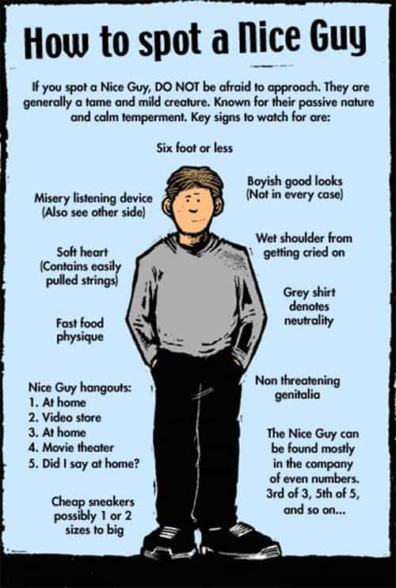
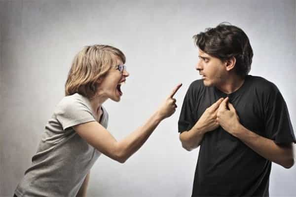

André is a young European who left his decaying country in 2012 for greener pastures. He enjoys exploring subterranean places, reading about a host of interconnected topics, and yearns for Tradition.


Too many otherwise good men are bashing the nice guy. I am not talking of constructive criticism but of blaming the nice guy as if he was morally evil or guilty. Even on ROK some said nice guys should be shamed or that nice guys are “liars.”
If you tend to think of this as normal, beware. For feminists have always done the same. Years ago, I tried to explain to an upper middle class girl what being a nice guy meant, with all the pain and chronic frustration associated, and the only thing she did was send me a feminist-made comic strip that consisted entirely of labelling nice guys as egotists, sexists, creepy, homophobic, and whatever leftist slur you can think of.
This was not exceptional. In fact, the incident contributed definitely to my awakening. The same feminists who gloat about their bleeding hearts, muh “care ethics” and “you’re lacking empathy” have absolutely no empathy and no human feeling for their brethren. Nice guys need approbation, nice guys tend to be already chivalrous and respectful to feminism, yet the feminists discard them with even more disdain than the Aztec priest discarded the dead body of his last sacrificed.
The manosphere has done an excellent job in helping numerous men to go beyond the nice guy phase. Game, the acceptance of rejection and struggle, knowing the female nature—all these aspects have been well covered in our milieus. However, the nice guy figure per se was never morally redeemed. This is, I think, a mistake.

Nice guys did not choose to be so. As nice guys, they are, or have been, produced by a complex set of factors.
Feminists killed the father figure. Many of us were raised by weak fathers and strong mothers. Many saw their parents divorce. Boomer and some X parents raised their girls and sons the same, because having an identity is “prejudiced” and “bigoted.” This is how men grew without ever learning how to pick up—and, even worse, were taught that men picking up were “pigs” and “disrespectful.”
Nice guys are often the product of a middle class environment. Yes, the same middle class that has been conned and impoverished by our psychopathic elites through globalism and debt. Delayed gratification, work ethic, a sense of personal responsibility, and the willingness to be gallant are all middle class values. The nice guy shows them at a high degree. He wants to commit and be committed, he’s ready to work and be patient.
Raised by “educated” parents, the nice guy is also imbued with the idea that “progress” is cool, that feminism is obviously great, and that equality and other blue pill idols are good as well. The nice guy genuinely wants to be “respectful”—which is why he’s so patient and unwilling to game, as he perceives game as manipulation—and supportive. He truly believes in the gender pay gap crap and frowns upon being “sexist.”
The nice guy is a product of the pre-2000s West: he is the bastard son of feminism, almighty female figures, and of a middle class that did not realize it was heading to a social meat grinder. He is the dream figure of feminism, imbued with any neutering, misandric conditioning feminists have crafted. He just doesn’t please the natural instincts of female nature.
No courage. No warrior values. No migrant invaders yet. No pickup and game know-how, no knowledge at all about identities, as he was raised in a world supposed to drop all identities, whether sexual, racial, or national, below the altar of the career-minded abstract individual. No felt need to level up your life. No masculine solidarity either of course.
Nothing but the almightiness of mom, the media, the educators, and hope that college and hard work will pay. This is how otherwise healthy and pro-social young fellows end up in debt and late virgins.

Yet, after he gets turned down by another girl he had hoped for, the nice guy realizes he’s facing an untold reality. On the one hand, it becomes clear that women are not attracted to him. They friendzone him while opening their legs for so-called pigs. These women are also hypocrites who use him as a support, telling him about how they got “abused” by the bad boy they chose over him, then gorging on his likes, attentions, praises.
On the other hand political correctness forbade to speak about human differences. All knowledge about what women really want was suppressed. And now the nice guys starts to feel the need for such knowledge. But then, his need, which could be partly satisfied by some philanthropic concessions from the Cathedral’s side, remains not only unanswered but even openly despised and trodden upon.
Before feminists became hysterical over Trump, they routinely gloated about drinking “male tears.” This was nothing less than open sadism. Their whole gamut over the “white males” and “privilege” is of the same cloth: your average Western woman considers that men have no rights, not even to empathy or fulfillment. Thus the same women who complain endlessly about their perceived problems as if they had no responsibility start tampering tantrums when men want to discuss their problems as well.

The bourgeois bohemians female “friends” who pretend their hearts are bleeding for rapefugees turn into cold, despising monsters, when you try to tell them about what the average mom-raised millennial goes through. And then they speak about care, empathy or fairness. Empty words in such (fish)mouths.
In other words, the nice guy, who usually started as an average believer into “progress”, was utterly abandoned by said “progress.” The intersectional forces that dominate mainstream culture purposefully excluded nice guy as nice guys from their ranks.
If you’re a man and you want to be a hipster, you have to virtue-signal and kowtow endlessly to even remain on board. Men are expected to tread upon their own identity and dignity whereas any so-called minority has a right to exalt its own identity endlessly.
Or, you can choose to leave. Which means struggling to go beyond the nice guy beta conditioning and thrive at least. This is usually the moment you begin to be really alive.
Thus many who were nice guys managed to surpass this stage of their life. Good riddance. But as a memory, and part of our history, it is ours, and no one else has legitimacy to write it for us. Instead, we should recognize that the nice guy has, or had, a moral logic of his own.
Being nice is being pro-social. Politeness, respect for conventions, make society easier to live in. It softens conflicts and allows for peace (until predators come in, of course). It is also conform to moral universalism: if everyone were as nice, the world would just live happily ever after.
Being nice is also being “respectful.” The nice guy has no game because he “respects” girls and address them as equals. He helps. He knows to listen. All of this is deeply ethical as long as you’re blue pill—and, at least, up until the whitemalephobia and “white = racist” leftism started to reach unbearable levels.
But, you may tell, what about the sex drive? The nice guy wants to fuck women as well, yet he never really assumes it, doesn’t that make him a hypocrite and a liar?
Feminism gave men contradictory imperatives: on the one hand, “emancipation” and a world of sexual liberty, on the other hand, the need to avoid picking up and avoid “sexism.” How can you assume wanting to fuck when you were raised to hate the Don Juan? When you were contradictorily taught that sex was good, yet actually doing anything about it was “sexist”, thus horrible?
Radical feminists went even farer when they chastised the normal, healthy masculine desire for beautiful and feminine girls. In his mind, the nice guy achieved equilibrium between his normal desire and felt social imperatives. This delicate compromise was cruelly shattered by fat lesbians and urban princesses.
Being a nice guy could seem OK in Francis Fukuyama’s world, when feminism looked like it was part of a general, “win-win” progress, and when all humanity seemed headed towards perpetual peace.
Now that feminism made clear it wanted us dead, neutered, or starving thanks to destructing people’s livelihood, and now that we’re aware, it should be clear to every sane man that the nice guy stage was never the normalcy it pretended to be.
Yet, as weak as it was, the nice guy condition should never be attacked as morally evil. If you were a nice guy once and keep bashing what you were as unethical, you will always carry a secret guilt, no matter how successful you became at bedding sluts. The mere tainted remembrance will make you ashamed. This is undeserved and unfair. It was not your fault, not your choice, and you did everything to be good and equilibrated according to what you knew then.
Immaturity is not a sin. Having been born in leftism, with a weak father, an almighty mother, is not a sin. Having been mentally conditioned by the globalists is not a sin. That being said, the sinlessness of our victimhood should not make us believe it is a desirable condition, and any man who finds himself carrying weakness or blue pill beliefs should strive to push himself.